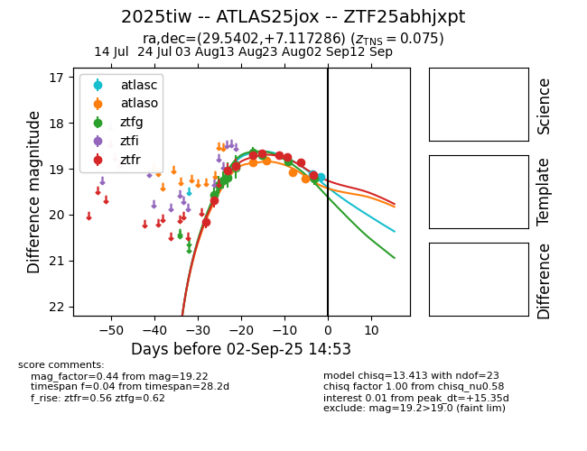

Target 2025tiw at 2025-08-21 10:32, see:
FINK: fink-portal.org/ZTF25abhjxpt
Lasair: lasair-ztf.lsst.ac.uk/objects/ZTF25abhjxpt
ALeRCE: alerce.online/object/ZTF25abhjxpt
TNS: wis-tns.org/object/2025tiw
YSE: ziggy.ucolick.org/yse/transient_detail/2025tiw
alt names
ZTF25abhjxpt (ztf,alerce)
2025tiw (tns,yse)
ATLAS25jox (atlas)
coordinates:
equatorial (ra, dec) = (29.5402,+7.11726)
galactic (l, b) = (150.5805,-52.13609)
photometry
last ztfg=18.70, ztfr=18.71
15 ztfg, 4 ztfr detections
